|
|
|
| Support
for Eclipse 3.0 |
The Visual Editor is now
compatible with Eclipse
3.0 Final, GEF 3.0 and EMF 2.0. |
|
|
|
|
Progress on SWT |
SWT support in the VE is coming
along, with the following enhancements:
Those interested in previewing the SWT support should see the
instructions here. |
|
|
|
| Initial
SWT Support on Linux/GTK |
The Visual Editor now supports
SWT development under Linux/GTK. 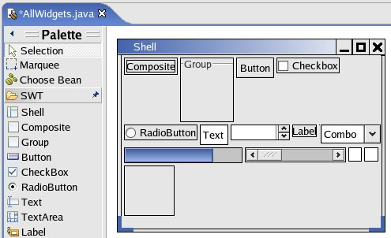 Follow the instructions here to get started with SWT support under VE. Note: A Shell's trim (title bar and border) does not reflect the native window manager on Linux/GTK. A simple trim is mocked-up around the Shell instead. If the remote VM window shows up on screen the window manager on the system does not allow windows to be positioned off screen. Manually move the remote VM window off the edge of the screen if having it on screen is annoying. (Bug 50436) |
|
|
|
| New Visual
Class Wizard |
The New Visual Class Wizard has
been updated to include additional code styles and parent components. 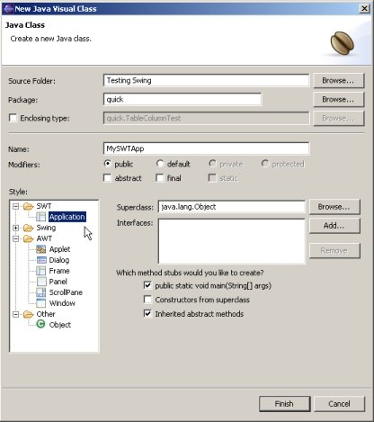 When choosing the SWT Application option, the generated class will be invalid if the SWT Library has not been added to your project. See the instructions on previewing SWT to add the SWT Library to your project. Selecting the option to generate the main method stub when using the SWT Application style will generate the event loop code necessary to run an SWT application. |
|
|
|
| Layout Customization Window |
The alignment window has been
redesigned to provide more flexibility in layout customization. 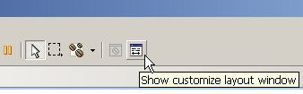 Layout customization is now split onto two pages that change dynamically based on the selected components in the VE. The layout page customizes the layout of the selected container or the selected control's parent container. 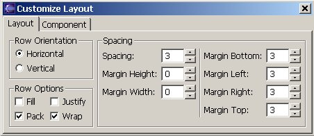 The component page customizes layout options for the selected component(s), based on their parent container's layout. 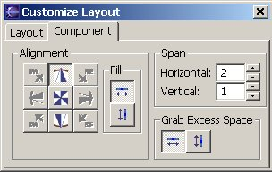 There currently are layout customization pages implemented for null, GridBag, Grid (AWT/Swing), Grid (SWT), Fill, and Row layouts. The customize layout window can be opened by pressing its button on the Eclipse toolbar, or by selecting Customize Layout... from the context menu for a graphical component. |
|
|
|
| Removed
Fully-Qualified Types |
The Visual Editor's reliance on
fully qualified type names has been reduced significantly. Now
when you drop and manipulate components the code generated is no
longer filled with javax.swing.*
and org.eclipse.swt.widget.*,
etc. Import statements are added as needed as new types are
referenced. |
|
|
|
| Removed Field Prefixes | The fields for non-visual components
no longer must be prefixed with ivj.
For non-visuals to show up on the free form, the visual-constraint
tag must be included in the // @jve:
comment on the field declaration. For a non-visual to be modeled
by the Visual Editor, but not shown on the free form, only the decl-index
tag needs to be present. Examples: This will be both modeled and show up on the free form: private CheckboxGroup myGroup = null; // @jve:decl-index=0:visual-constraint="" This will be modeled but not show up on the free form: private CheckboxGroup myGroup = null; // @jve:decl-index=0 These will be neither modeled nor show up in the Visual Editor: private CheckboxGroup myGroup = null; // @jve: private CheckboxGroup myGroup = null; |
|
|
|
| GridLayout (SWT) Editor | The VE now includes an advanced
editor for SWT's GridLayout. The editor features:
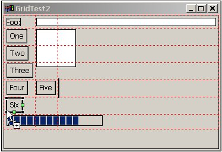
|
|
|
|
| Component
Error Messages in Tool Tips |
Error messages for a visual
component are now displayed in the component's tool tip on the
graphical surface. Previously the only way to see these messages
were to select the component then read the Eclipse status line
text. The tool tip will also show multiple errors, where as the
status line only shows a single message. 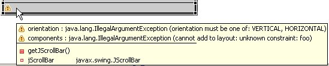 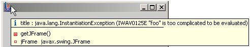 |
|
|
|
| Palette
Improvements |
The Visual Editor's palette can
now be hosted in the Palette view. This allows for the palette to
be placed anywhere in the perspective, as a fly out, or as a tear off
view. If the Palette view is open in the current perspective, the
Visual Editor's palette will be populated in the view. Otherwise
the palette will be embedded in the editor window as before. 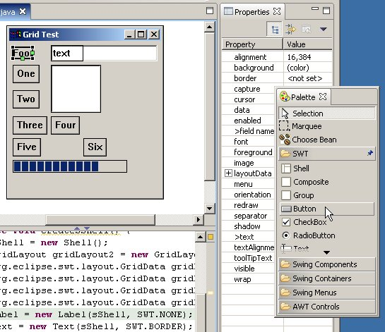 To show the Palette view, go to Window->Show View->Other..., expand the Basic group, select Palette and press OK. 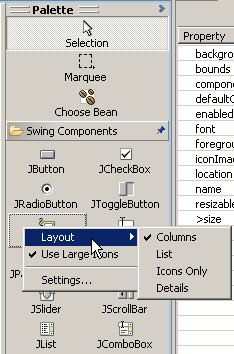The embedded palette has been improved as well. It can be docked to the left or right side of the editor, will automatically fly out when the cursor hovers over the collapsed view, and will maintain size preferences. The palette also now supports several different layout options, including columns and icons only. Some additional configuration options are available by selecting the Settings... option from the context menu on the palette. |
|
|
|
| Graphical
Manipulation of Table Columns |
You can now add, move, delete,
and direct edit TableColumns on JTables graphically (the
autoCreateColumnsFromModel property on the JTable must be set to false
to drop TableColumns). To select a column, click in the content
area on the table (not the column header). Performing direct edit
on a Table Column modifies the headerValue property. 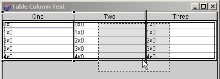 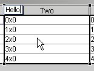 |
|
|
|